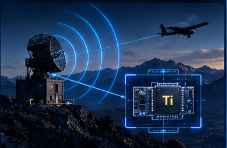
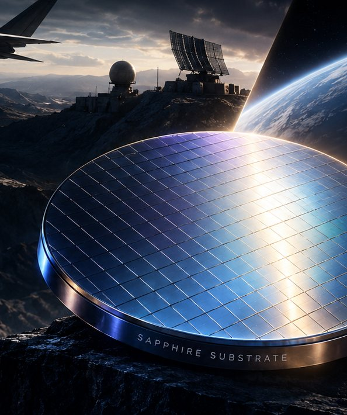
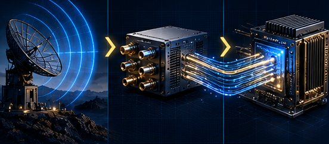
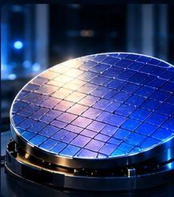

RF and compute, closer
Front end and processor normally sit on separate dies, packages and often boards. A shared wafer lets suitable designs place selected processing right behind the RF electronics.

Where silicon ends.
Titanym begins.
We are developing a two-sided sapphire semiconductor platform that brings III-nitride RF electronics and silicon-germanium compute into one wafer architecture, for defense, space and telecommunications.

Then wired together later, through packages, interposers and boards.
GaN
SiGe

Radar, electronic warfare, satellite links and telecom networks all pair high-frequency RF electronics with ever more digital processing. The two need different materials, fabrication and thermal conditions, so today they are made separately and joined later through packages, interposers and boards.
Better system integration starts with a better semiconductor architecture.
Titanym places III-nitride RF structures and SiGe electronics on opposite faces of a single sapphire substrate, bringing complementary semiconductor functions into one common foundation. The cutaway is conceptual; the architecture is under development.
RF on top, sapphire at the core, electronics below. Between the faces sit inter-side signaling, isolation, thermal paths and RF and compute coexistence, designed and validated together. Pick a layer to explore it.
Gallium-nitride-family devices for high-power, high-frequency work: the RF front ends of radar, electronic warfare and communications systems. Sapphire is already an established substrate for III-nitride growth.
Single-crystal sapphire is an electrical insulator by nature. It gives both device layers a common physical foundation while keeping them electrically separate.
Single-crystal silicon-germanium for high-performance electronic and processing functions, grown on the opposite face of the same wafer.
Heterogeneous systems usually meet at the package. Titanym moves the meeting point down to the wafer itself.
Front end and processor normally sit on separate dies, packages and often boards. A shared wafer lets suitable designs place selected processing right behind the RF electronics.

Sapphire insulates the two device layers by nature, rather than by added packaging, and it is a substrate the III-nitride industry already knows well.
The signal, power and control paths between the two faces are designed and validated as part of the architecture, not bolted on afterwards.
Power RF runs hot and precision electronics do not like heat. Thermal flow and long-term reliability are treated as primary design constraints from the start.
Single-crystal silicon-germanium has been grown directly on sapphire at 450–500 °C in published research and characterized by X-ray diffraction, AFM and TEM. Titanym builds from that foundation; the integrated RF and compute platform is under development.

Not a replacement for every process. A new integration path where conventional approaches force costly tradeoffs.
Radar and electronic warfare combine demanding RF front ends with signal processing and control. Titanym is targeting ways to bring selected processing closer to the high-frequency electronics through a common-substrate architecture.
Radar front ends · RF sensing · Electronic warfare electronics · Signal-processing subsystems
Modern networks depend on RF hardware and digital processing working together. Titanym’s architecture opens new approaches to high-frequency communications electronics where integration, heat and packaging complexity matter.
Wireless infrastructure · Microwave and high-frequency links · Telecom RF electronics · Communications processing
Spacecraft and satellite links demand tight control of power, heat, mass and reliability. Titanym is pursuing an integration architecture for future RF and computing payload electronics, subject to each mission’s qualification requirements.
SATCOM electronics · Payload signal processing · Spaceborne RF subsystems
Selected aerospace, industrial and high-reliability systems may gain from closer integration of RF and electronic functions. We evaluate these by customer requirements and demonstrated device capability.
Harsh-environment sensing · Specialized electronic modules · High-reliability systems
Titanym’s submitted solutions were assessed as Awardable in two separate defense innovation marketplaces, giving authorized government customers a route to review them and open acquisition discussions.
Awardable through the Department of Defense Chief Digital and Artificial Intelligence Office’s Tradewinds Solutions Marketplace, where authorized government buyers review assessed solutions and consider procurement pathways.
tradewindai.comViewing the submission requires a government login.
Awardable in the Defense Advanced Research Projects Agency’s Expedited Research Innovation System (ERIS) Marketplace after a competitive technical assessment of the submitted solution.
darpaconnect.us/erisViewing marketplace materials requires an authorized government account.
Assessment as Awardable does not constitute a government contract, funding commitment, endorsement, sole-source authorization, or guarantee of an award. The two marketplaces assessed Titanym separately; neither is a joint certification.
We welcome conversations with government customers, defense and communications companies, semiconductor manufacturers and technical partners exploring advanced RF and compute integration.